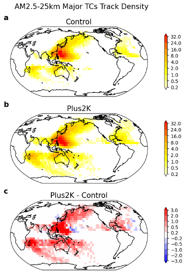
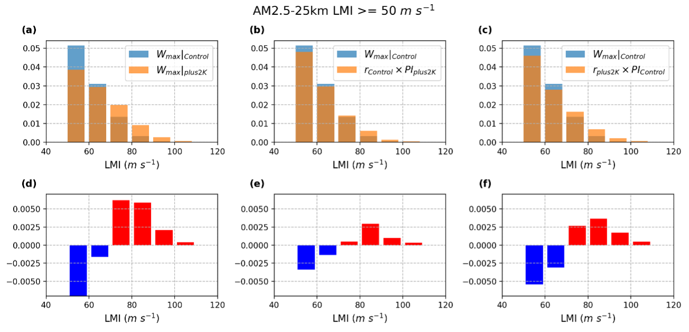

Overview: In a high-resolution global TC-permitting model, I find that uniform SST warming intensifies tropical cyclones through two reinforcing pathways: PI increases, and storms become more effective at reaching that limit. This simultaneous rise in thermodynamic potential and efficacy leads to substantially more Category 3–5 storms. The boost in efficacy persists even after accounting for changes in wind shear and ventilation, indicating that ventilation changes are not the main cause. These results show that focusing solely on PI underestimates future intensification, and that a clearer theory for what controls efficacy is essential for improving projections of TC intensity in a warming climate.

Maps of annual mean track density for major TCs (i.e., Category 3–5 TCs with \( w_{max} \geq 50 \text{ m s}^{-1} \)) in (a) Control, (b) plus2K, and (c) plus2K minus Control. Track density is computed as the number of Category 3–5 TC tracks within each 5°×5° boxes.

Lifetime maximum intensity probabilities distributions for (a) Control and plus2K, (b) Control and the reconstructed \( w_{max}|_{p2K} \) computed by Eq. 4, and (c) Control and the reconstructed \( w_{max}|_{p2K} \) computed by Eq. 5. The corresponding difference are shown in (d), (e) and (f) respectively.